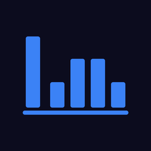

A — Clean

Leviticus
Clean. Logo + wordmark + spinner pequeno embaixo. Mais sóbrio, chama atenção pro logo sem distrações.
B — Glow + barra
Leviticus
Música para a igreja
Glow + barra. Logo respira (scale + halo) com tagline. Barra indeterminate cruza a base — sensação de "carregando".
C — Equalizer animado
Leviticus
Equalizer animado. Versão "viva" do próprio ícone — as barras pulsam como num equalizer real. Tema musical reforçado.